RestaurantWelcome
La table portugaise d'Esch — fruits de mer, espetada, bacalhau et grillades, dans une maison où l'on est reçu.
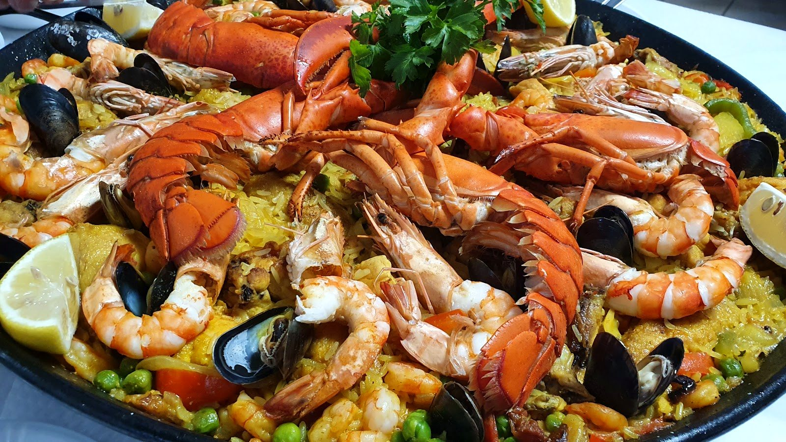
Polvo à lagareiroLe poulpe grillé, sur sa planche
Le poulpe grillé, arrosé d'huile d'olive et d'ail, avec ses pommes de terre — un grand classique portugais, servi sur la planche de terre cuite.
À côté, toute la mer : gambas, langoustines, arroz de marisco. Et le gril qui tourne — espetada, côte de bœuf, bacalhau. La générosité d'une vraie table portugaise, où l'on est reçu comme à la maison.
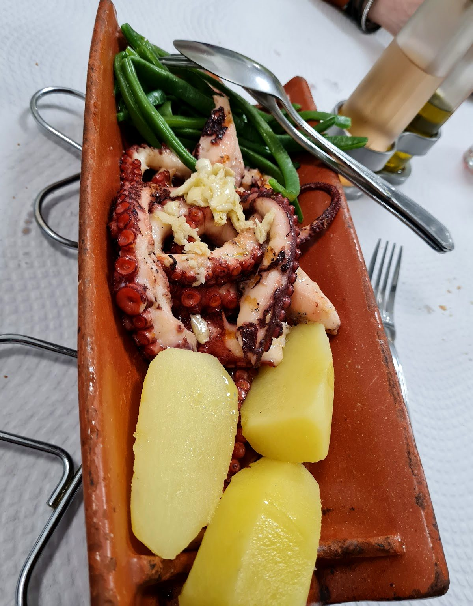
Sur sa plancheGénéreux, fruits de mer & gril
Grands plats de la mer, grillades et espetada — la cuisine portugaise, abondante, qu'on partage à Esch.
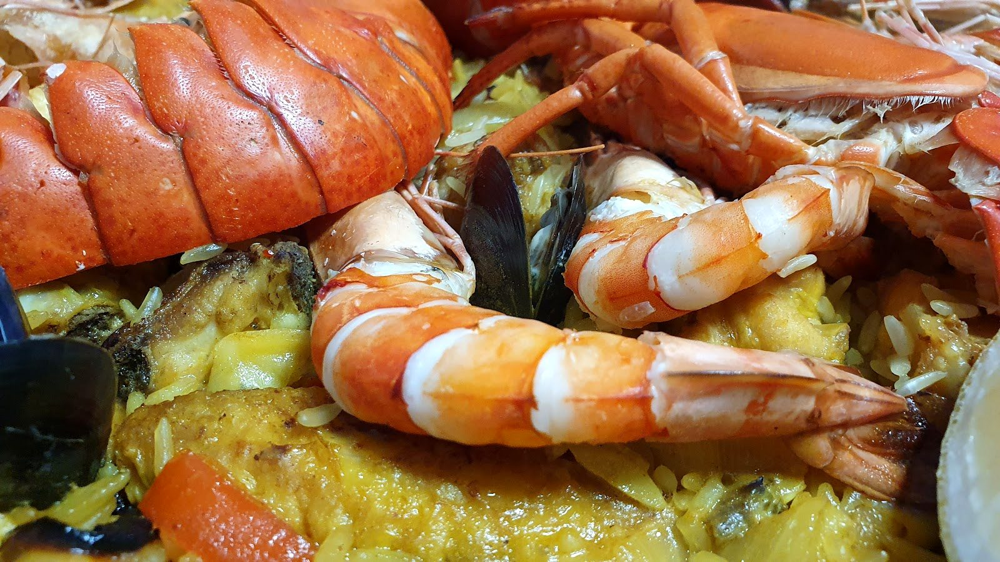
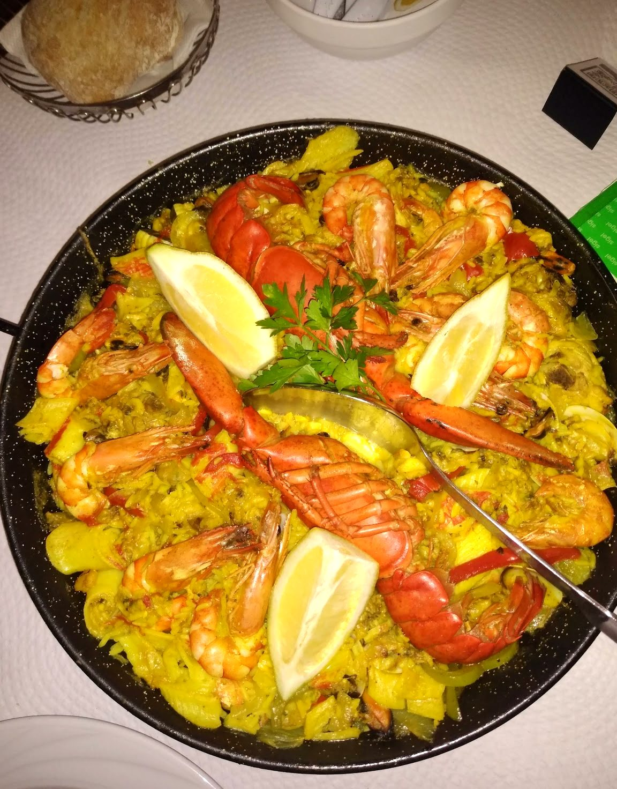
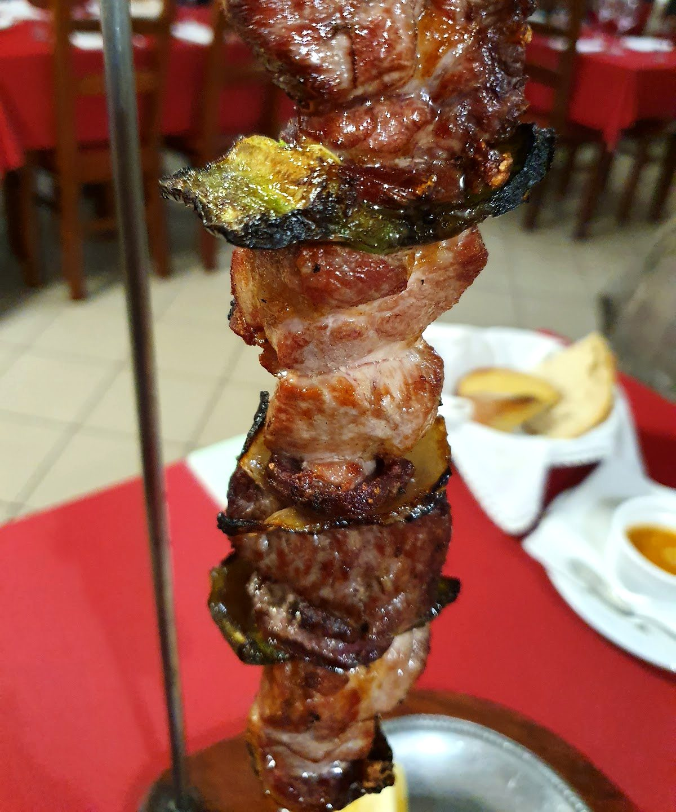
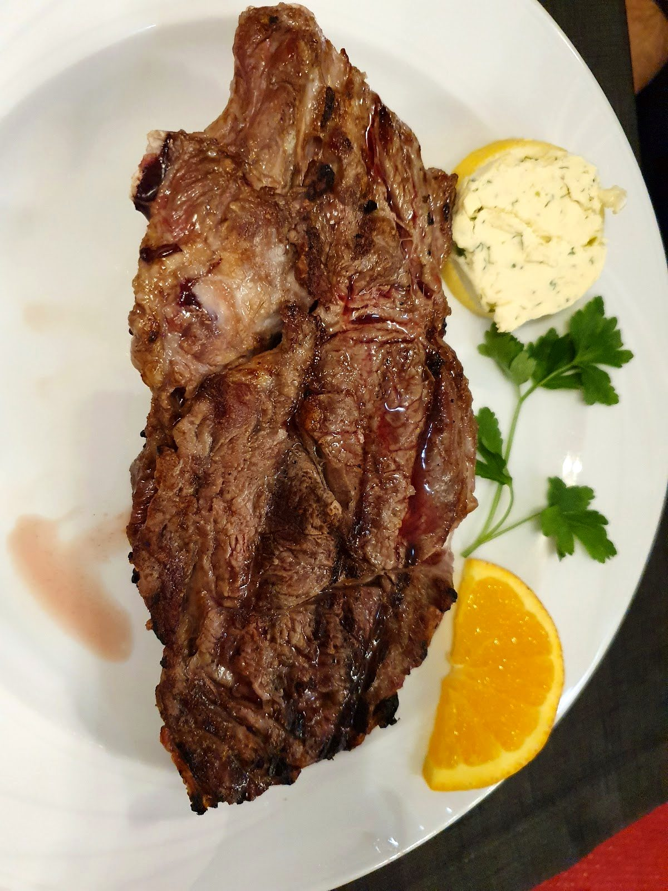
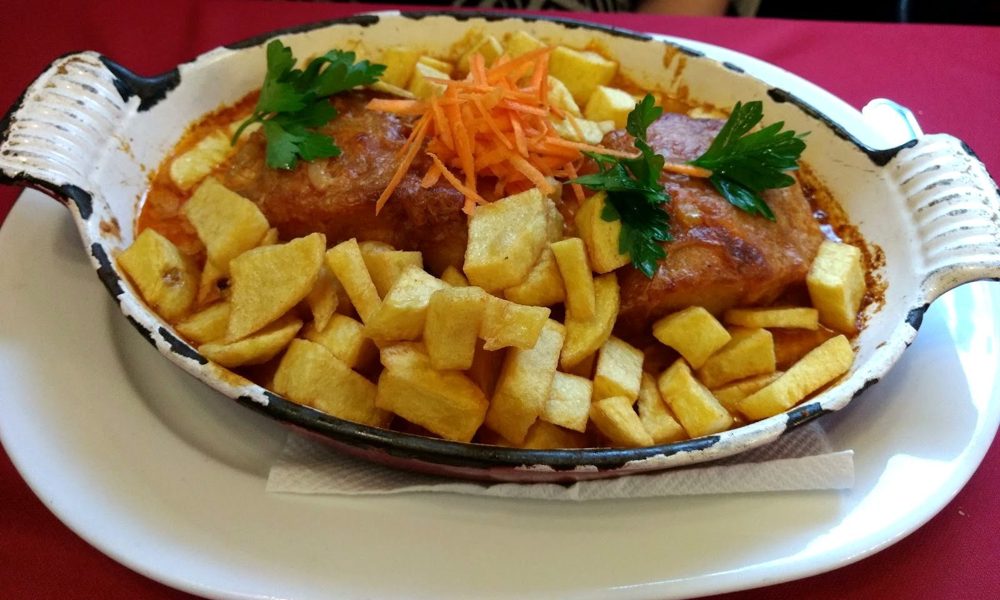
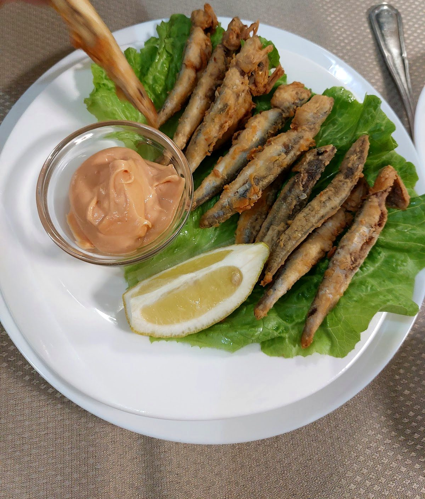
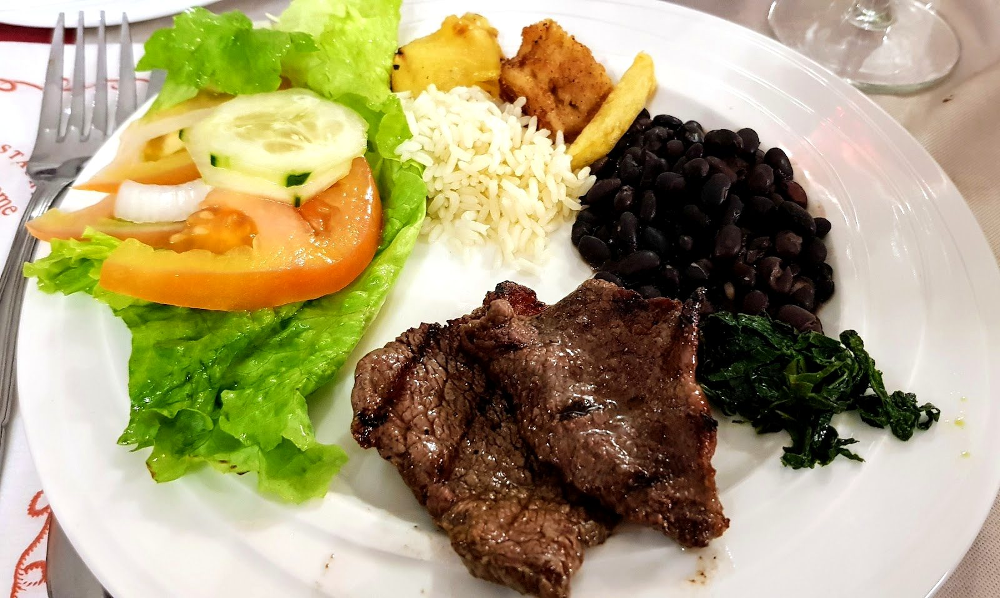
Une maison où l'on est reçu
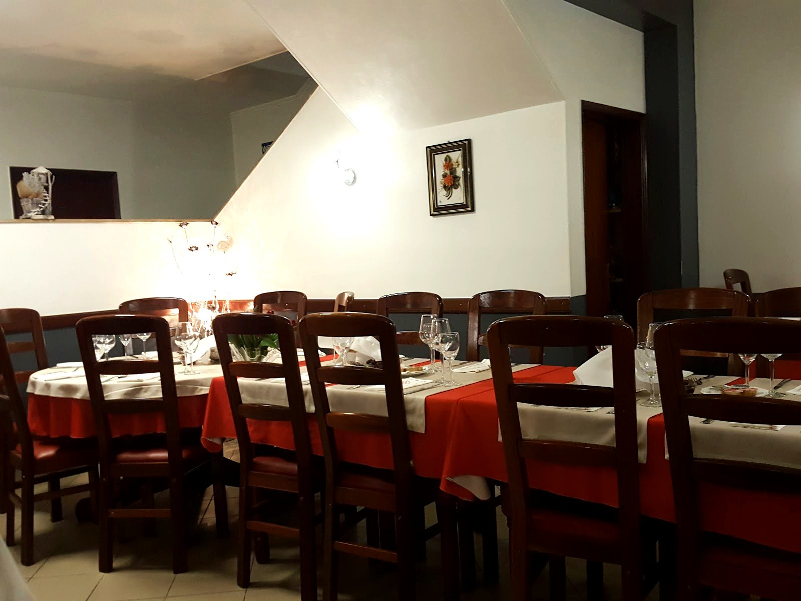
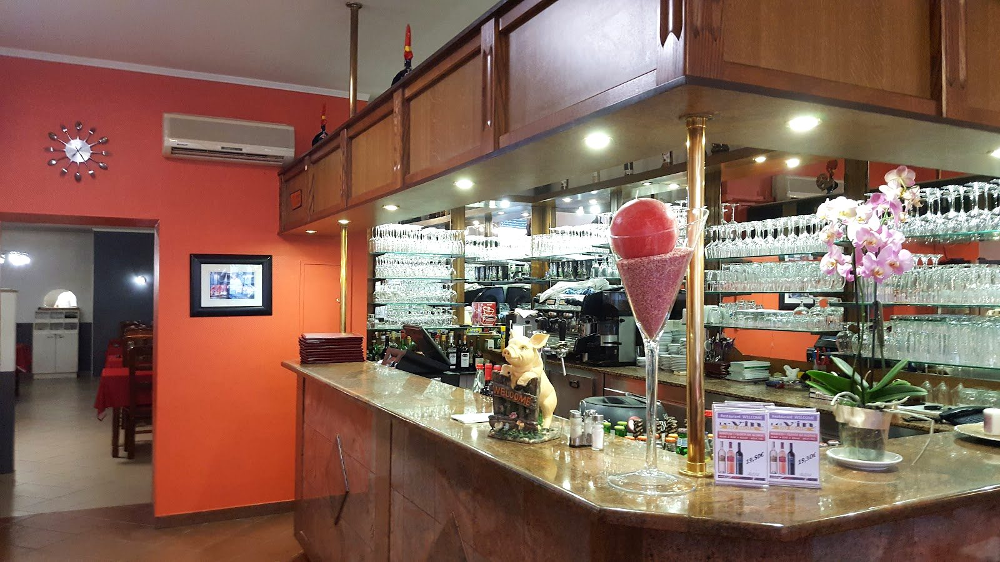
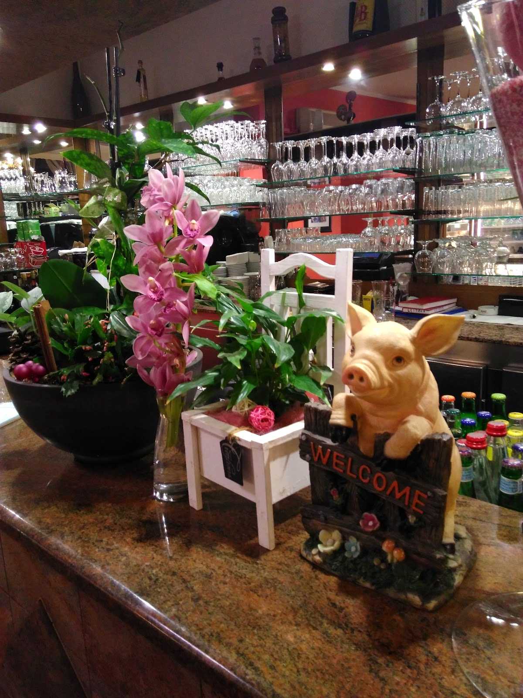
Nappes blanches et rouges, un comptoir garni, l'orchidée sur le bar et le petit écriteau « Welcome » : une maison portugaise chaleureuse et animée, où l'on prend le temps — sur place ou pour une grande tablée.
Ce qu'on sert
La mer, le gril et les classiques portugais — et de quoi les accompagner. Plats d'après les photos de la maison ; prix à confirmer sur place.
La mer
Le gril
Le Portugal
À boire & desserts
Plats d'après les photos publiques de la maison, à titre indicatif. Aucun prix n'est publié : la carte et les prix sont à confirmer sur place.
Nous trouver
L-4051 Esch-sur-Alzette
horaires à confirmer
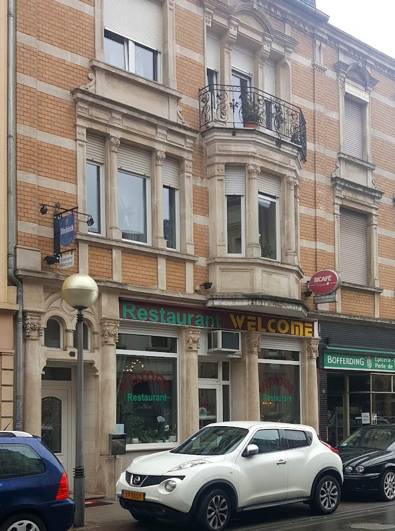